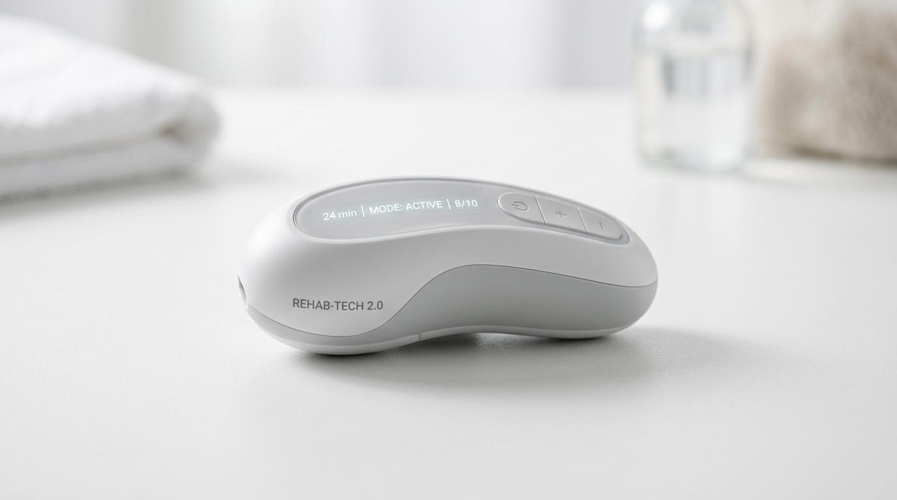
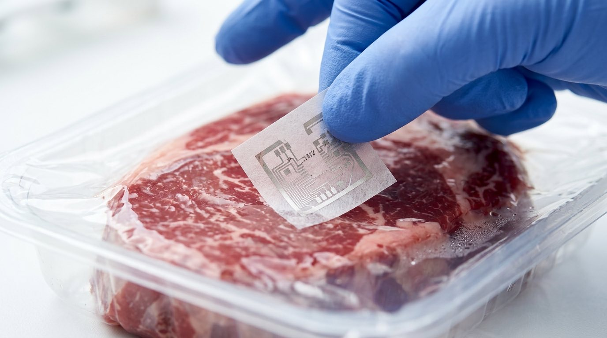
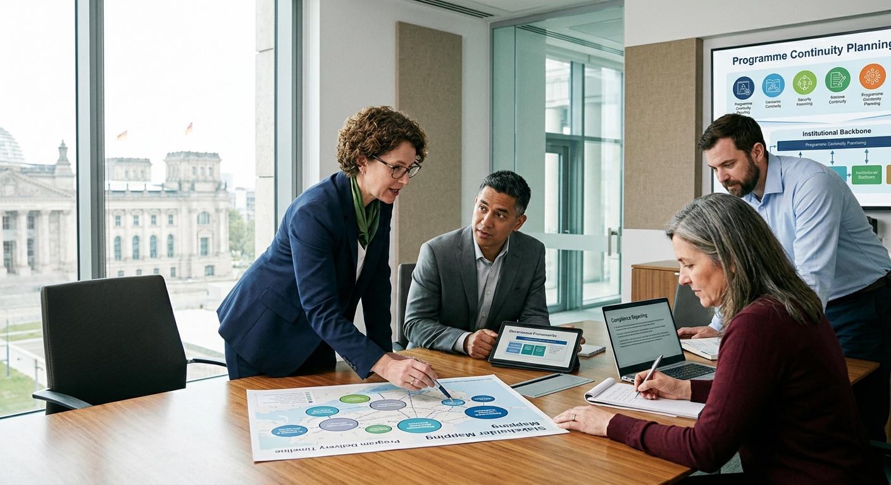

From validating bold ideas to delivering complex funded projects, VDB partners with government, universities, and enterprises to turn ambition into impact. O ddilysu syniadau beiddgar i gyflawni prosiectau ariannu cymhleth, mae VDB yn partneru gyda'r llywodraeth, prifysgolion, a mentrau i droi uchelgais yn effaith.
We bring together research, funding expertise, and programme delivery to help organisations achieve their most ambitious goals. Rydym yn dod ag ymchwil, arbenigedd cyllido, a chyflawni rhaglenni ynghyd i helpu sefydliadau i gyflawni eu nodau mwyaf uchelgeisiol.
End-to-end governance and programme delivery for government bodies. Stakeholder coordination, reporting, minutes, and institutional continuity across multi-year funded periods. Llywodraethu a chyflawni rhaglenni o'r dechrau i'r diwedd ar gyfer cyrff llywodraethol. Cydlynu rhanddeiliaid, adrodd, cofnodion, a pharhad sefydliadol ar draws cyfnodau ariannu aml-flwyddyn.
Learn moreDysgu mwy →Primary and secondary research to validate new ideas. Human-centred design, user workshops, and corporate insights enriched with peer-reviewed evidence. Ymchwil gynradd ac eilaidd i ddilysu syniadau newydd. Dylunio sy'n canolbwyntio ar bobl, gweithdai defnyddwyr, a mewnwelediadau corfforaethol wedi'u cyfoethogi gyda thystiolaeth a adolygwyd gan gymheiriaid.
Learn moreDysgu mwy →We develop winning bids and unlock substantial public and institutional funding. Our team has secured over £255m for UK R&D projects across government, UKRI, and charitable foundations. Rydym yn datblygu ceisiadau llwyddiannus ac yn datgloi cyllid cyhoeddus a sefydliadol sylweddol. Mae ein tîm wedi sicrhau dros £255m ar gyfer prosiectau ymchwil a datblygu y DU.
Learn moreDysgu mwy →Lab-to-market delivery. We build demonstrators, run field trials, and develop scalable solutions — from bio-fertiliser production to medical sensor technology. Cyflawni o'r labordy i'r farchnad. Rydym yn adeiladu arddangoswyr, yn rhedeg treialon maes, ac yn datblygu atebion graddadwy.
Learn moreDysgu mwy →Climate research, ESG risk frameworks, and circular economy innovation. Our clients include Earthshot Prize shortlistees and Terra Carta Labs winners. Ymchwil hinsawdd, fframweithiau risg ESG, ac arloesedd economi gylchol. Mae ein cleientiaid yn cynnwys rhai ar restr fer Gwobr Earthshot.
Learn moreDysgu mwy →Professional bilingual content for government and public sector. Human linguistic expertise enhanced by AI-powered automation for Welsh-English and multilingual projects. Cynnwys dwyieithog proffesiynol ar gyfer y llywodraeth a'r sector cyhoeddus. Arbenigedd ieithyddol dynol wedi'i wella gan awtomeiddio wedi'i bweru gan AI ar gyfer prosiectau Cymraeg-Saesneg ac amlieithog.
Learn moreDysgu mwy →Before building anything, we make sure the idea is sound. Our research team tests assumptions with real evidence. Cyn adeiladu unrhyw beth, rydym yn sicrhau bod y syniad yn gadarn. Mae ein tîm ymchwil yn profi rhagdybiaethau gyda thystiolaeth go iawn.
We assemble the right teams, secure funding, and build the partnerships needed to move from concept to delivery. Rydym yn cydosod y timau cywir, yn sicrhau cyllid, ac yn adeiladu'r partneriaethau sydd eu hangen i symud o gysyniad i gyflawni.
Our science and engineering teams deliver real outcomes — from lab demonstrators to new enterprises ready for market. Mae ein timau gwyddoniaeth a pheirianneg yn cyflawni canlyniadau go iawn — o arddangoswyr labordy i fentrau newydd yn barod ar gyfer y farchnad.
Our first spin-out enterprise. Converting human urine into validated crop fertiliser, deployed at UK festivals and now growing native trees in the Brecon Beacons. Ein menter deillio gyntaf. Trosi wrin dynol yn wrtaith cnydau dilysiedig, wedi'i ddefnyddio mewn gwyliau yn y DU ac yn awr yn tyfu coed brodorol ym Mannau Brycheiniog.

Programme management for the SqueezAble paediatric device. Now deployed across 350+ NHS and healthcare locations worldwide with US expansion via Medline. Rheoli rhaglen ar gyfer y ddyfais bediatrig SqueezAble. Bellach wedi'i ddefnyddio mewn dros 350 o leoliadau GIG a gofal iechyd ledled y byd.
Helped design the accelerator programme for this national innovation hub. 69 companies supported, £180m raised by portfolio companies, 1,100+ jobs created. Helpu i ddylunio'r rhaglen gyflymydd ar gyfer y ganolfan arloesi genedlaethol hon. 69 cwmni wedi'u cefnogi, £180m wedi'i godi.

Supporting the world's first digital freshness sensor company. Now deployed across 17 Cranswick production sites — a first for the UK meat industry. Cefnogi cwmni synhwyrydd ffresni digidol cyntaf y byd. Bellach wedi'i ddefnyddio ar draws 17 safle cynhyrchu Cranswick.

We run the governance process so public bodies can focus on their mission. From stakeholder coordination to compliance reporting, we provide the institutional backbone for multi-year funded programmes. Rydym yn rhedeg y broses lywodraethu fel y gall cyrff cyhoeddus ganolbwyntio ar eu cenhadaeth. O gydlynu rhanddeiliaid i adrodd ar gydymffurfiaeth, rydym yn darparu'r asgwrn cefn sefydliadol ar gyfer rhaglenni ariannu aml-flwyddyn.